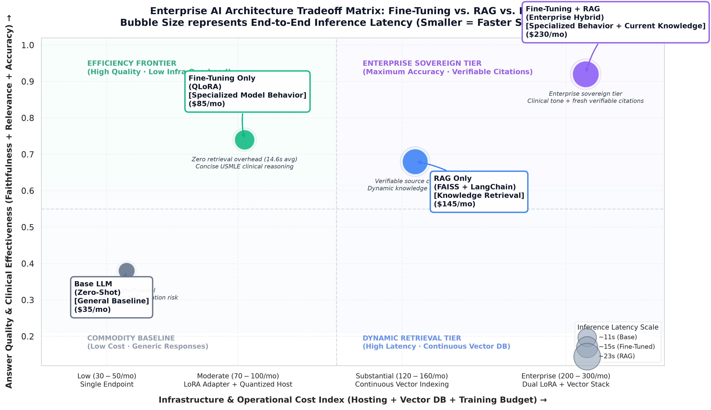
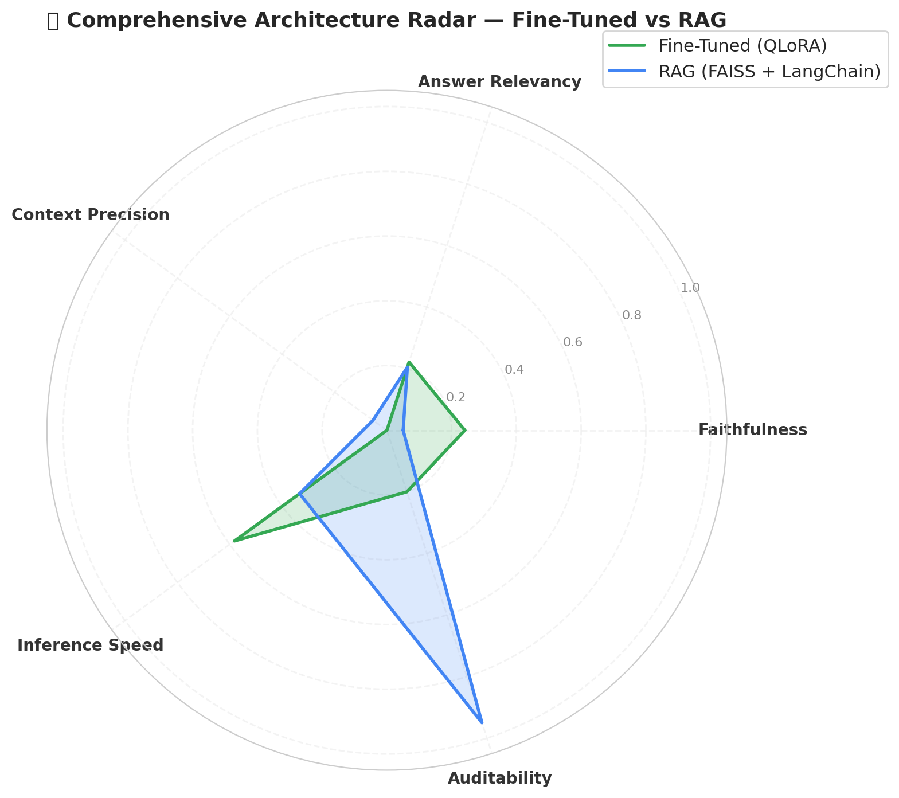
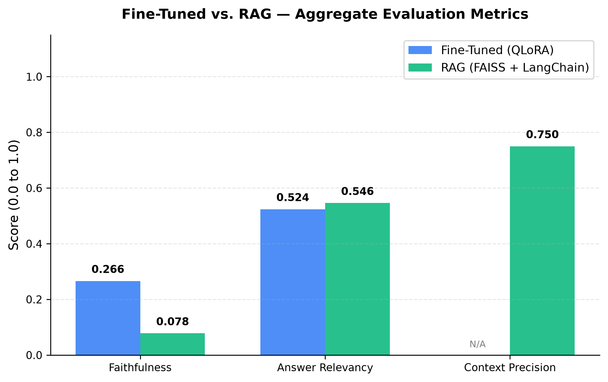
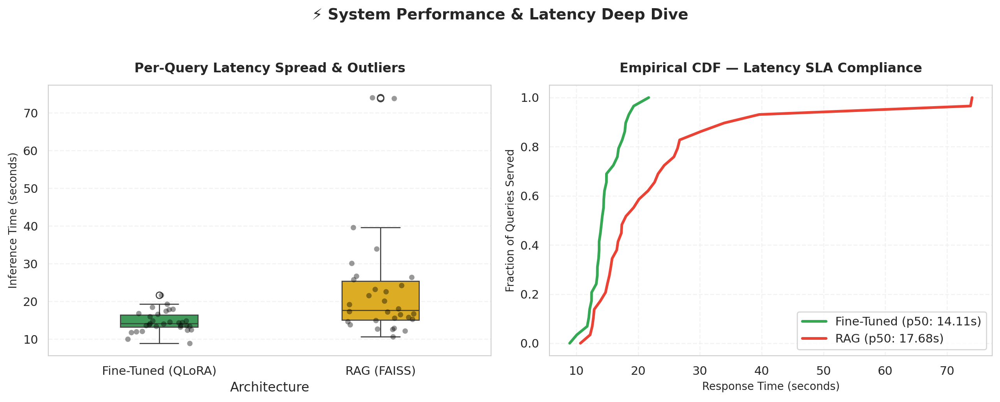
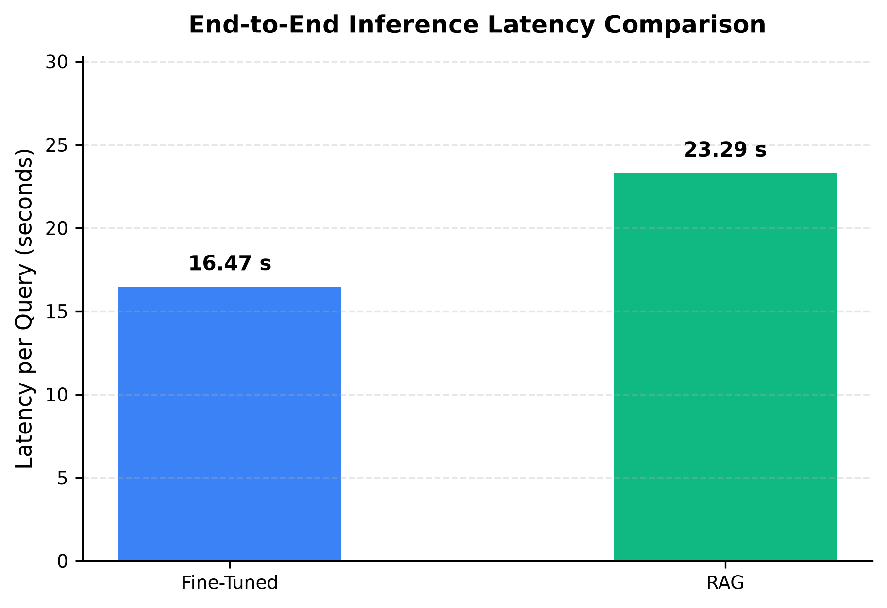
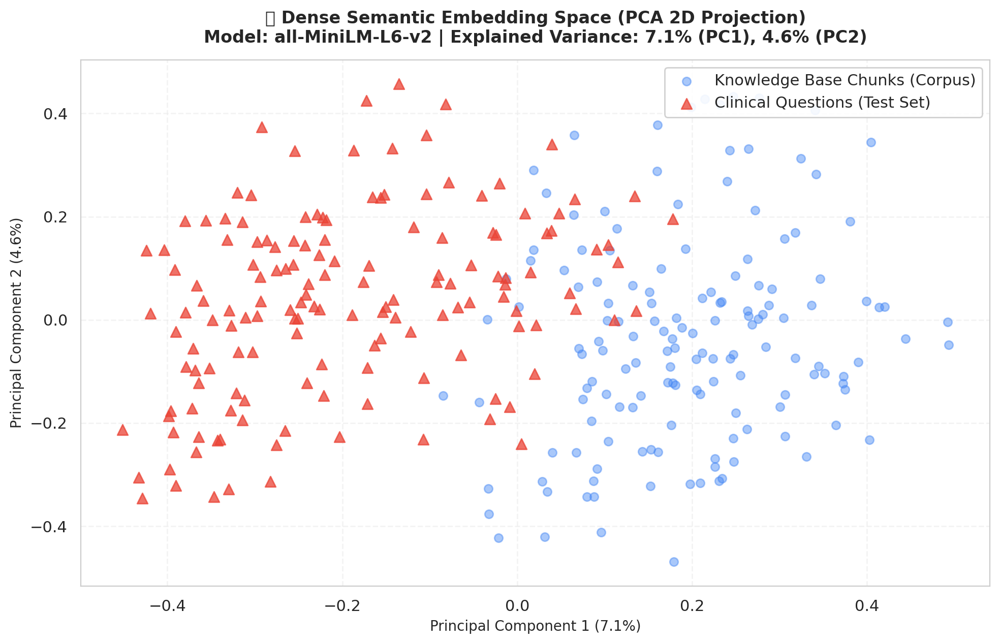
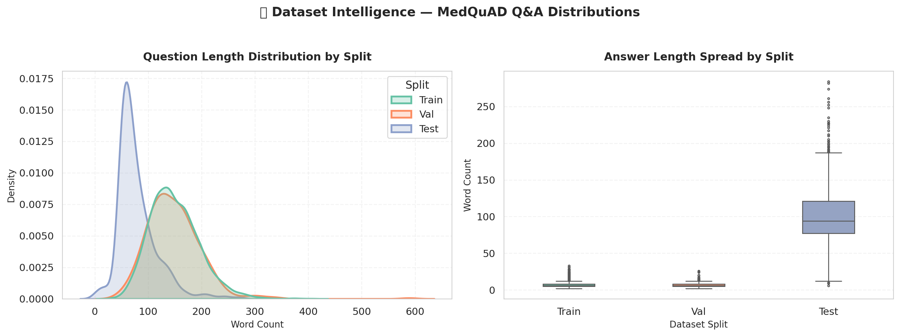
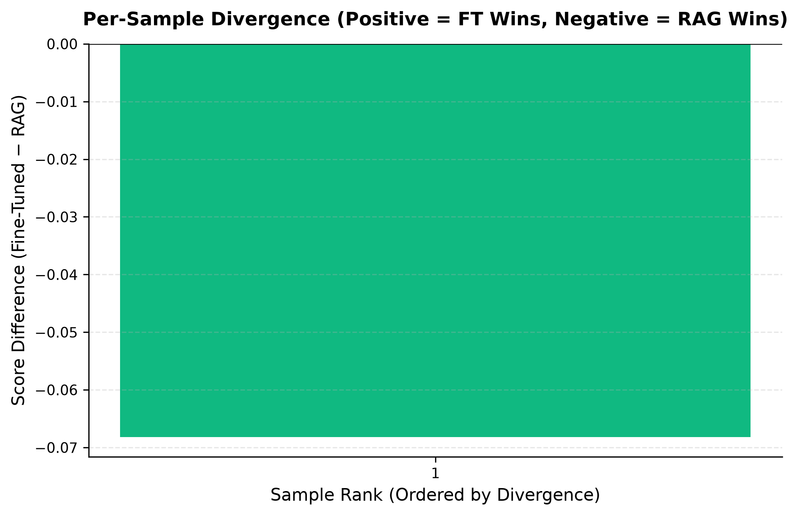
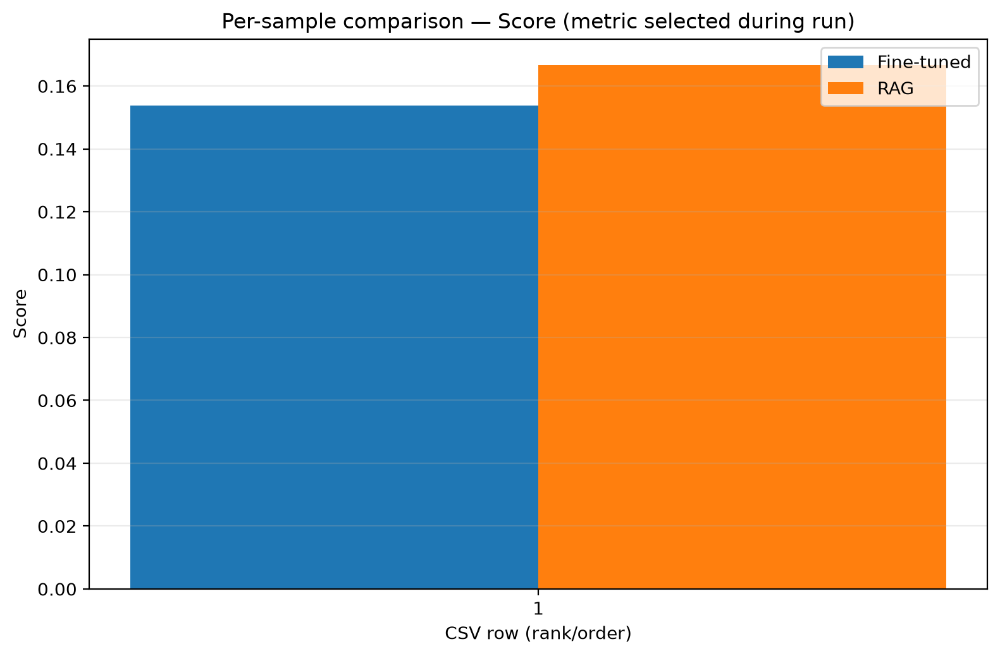

🏥 Fine-tuned vs RAG Benchmark Dashboard
Timestamp: 2026-11-20T23:27:11.688342 · Evaluated samples: 30 held-out test cases · Judge: Qwen2.5-7B (4-bit local GPU)
🏆 Aggregate Metric Scores
| Metric | Fine-tuned (QLoRA) | RAG (FAISS) | Winner |
|---|
| faithfulness | 0.241 | 0.050 | Fine-tuned |
| answer_relevancy | 0.221 | 0.205 | Fine-tuned |
| context_precision | — | 0.053 | RAG only |
Enterprise MLOps Architecture Tradeoff Matrix

Multidimensional Architecture Radar

Aggregate Quality Metrics Comparison

Inference Latency Deep Dive (Spread & SLA ECDF)

Average Inference Latency Comparison

Semantic Embedding Space (PCA 2D Projection)

Dataset Intelligence (Length & Token Distributions)

Per-Sample Score Delta (FT − RAG)

Per-Sample Score Comparison

⚙️ Run Configuration
- finetuned_model: ./checkpoints/medquad-lora
- rag_index: ./indexes/medquad_faiss
- metrics: ['faithfulness', 'answer_relevancy', 'context_precision']
- k: 4
- judge: local
- embeddings: sentence-transformers/all-MiniLM-L6-v2